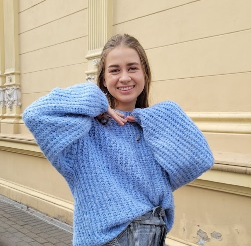

I have experience working with Wondershare Filmora and Davinci Resolve. I have been creating content for YouTube channel "Anya Golik" (2017-2021). Administrator of the inspirational Christian platform "Live Inspired" (2018-2022); collaboration with St. Pascal School, Minnesota (2019); Leader of the campaign for spreading awareness about cyberbullying "Online Affects Offline"(2022).
